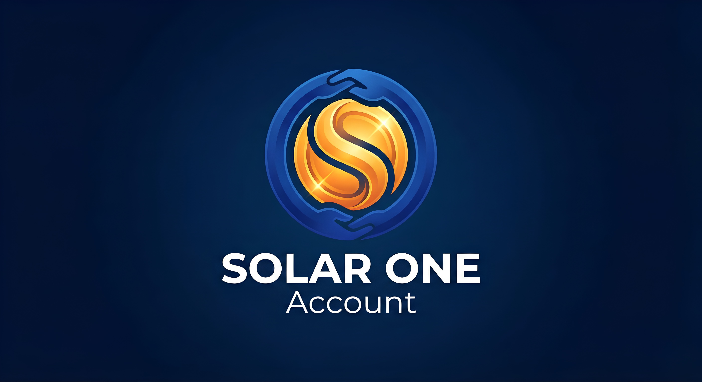

A energia deixou de ser só uma questão de geração. Virou questão de procedência, confiabilidade e governança: curtailment que apaga receita, gargalos de intercâmbio, excedentes que disparam cortes, metas de consumo limpo 24/7. São sinais caros — e quase invisíveis. Decisões de centenas de milhões são tomadas com informação assimétrica.
Uma camada de inteligência analítica sobre dados oficiais do setor (ONS, CCEE, ANEEL, EPE, NASA POWER), consolidados em base própria com mais de 143 milhões de registros. Transformamos o rastro operacional público em leitura por hora, por ativo e por corredor — cada número auditável e regenerável a partir da fonte. É leitura rastreável, não opinião.
Prova auditável de curtailment, valor de flexibilidade/BESS por barramento e risco técnico de conexão.
Evidência de consumo limpo 24/7 para Scope 2, CBAM e IFRS S2 — matching hora a hora, não certificado anual.
Leitura de transmissão para due diligence, originação em leilões e triagem de oportunidade por lote.
Base técnica para consultas regulatórias e evidência ex-post como insumo de quem precifica risco.
Nossa leitura é confrontável com o oficial: o que extraímos do dado bruto é coerente com o número público do setor — e ainda desce ao detalhe (por ativo, por corredor) que a estatística agregada não mostra.
Maturidade declarada com honestidade: SOA/SOS em operação há poucos meses, com três pedidos de patente depositados no INPI. A camada de inteligência analítica opera sobre dado real hoje; a plataforma de certificação horária de energia está em desenvolvimento.
A SOA/SOS desenvolve inteligência analítica auditável sobre o sistema elétrico brasileiro, a partir de dados oficiais e públicos (ONS, CCEE, ANEEL, EPE, NASA POWER) consolidados em base própria. A camada analítica opera sobre dado real; a plataforma de certificação horária está em desenvolvimento.